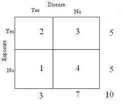
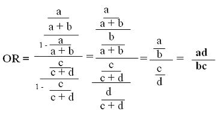

Odds Ratio
Lead Author(s): Jeff Martin, MD
Odds Ratio = Four Probabilities
Odds are already the ratio of two probabilities, so the odds ratio involves four probabilities:
- p(event) / 1 - p(event) in the exposed, and
- p(event) / 1 - p(event) in the unexposed that yield a single ratio.

So in the above example the p of the event in the exposed is 2/5, 1 - p of the event in the exposed is 3/5.
- Similarly, p of the event in the unexposed is 1/5 and 1- p(event) in the unexposed is 4/5.
- So the odds of the event in the exposed is 2/3 and the odds of the event in the unexposed is 1/4.
- The ratio of those two odds is (2/3) / (1/4) = 2.67
For probability (# events/ # exposed ) / (# non-events/ # not exposed)
Relationship Between Probablity Ratio and Odds Ratio
Notice that the odds ratio is larger than the probability ratio (either prevalence or risk ratio) in the above example.
Unless both ratios = 1.0,
- the odds ratio will always be farther from 1.0 than the probability ratio (greater if > 1.0 and smaller if < 1.0)
- because the probability ratio is the ratio of two probabilities and the odds ratio is the ratio of two probabilities each of which has been divided by (1 - probability), a quantity that is always < 1 unless the probability is 1.0.
Odds Ratio of Disease in Exposed and Unexposed
We begin with our 2 x 2 table below:
We then do a little algebra to show how these four fractions reduce down to what is called the cross-product of the 2x2 table,
- the ratio of the products of the two diagonals.

We find that the odds ratio of disease in the exposed and unexposed equals the odds ratio of exposure in the diseased and not diseased.
Odds Ratio of Exposure in Diseased and Not Diseased
In the equations below we are calculating the probabilities of exposure and non-exposure in those with disease and similarly for those without disease and then forming an odds ratio.
So the probabilities, with our arrangement of disease across the top, are calculated within the columns rather than within the rows.
In a cross-sectional study, we would normally not be interested in looking at exposure by disease status because we are always interested in how exposure leads to disease, i.e., how disease is distributed among the exposed. We are looking at this way in order to show that the odds ratio for exposure equals the odds ratio for disease.
This is an important property of the odds ratio and its use in case-control studies. It was originally pointed out by Cornfield, a pioneer of modern observational epidemiology, in the 1950's and drew attention to the usefulness of the case-control design.
Regression Coefficient Equals Log of the Odds Ratio
An important property of the odds ratio is that the:
The coefficient of a predictor variable in logistic regression is the log odds of the outcome
- (e to the power of the coefficient = OR)
Misuse of Odds Ratio
Language like "X times as likely to" implies a comparison of probabilities, not odds -
Regardless of the actual measure of association that was calculated by the study or what measure it validly estimates,
- most researchers want to use the language of probability or words that suggest probabilities when they discuss their results.
As a result, it is rare to hear the appropriate language:
- the odds of disease among those who had ever smoked were 3.6 fold greater than among those who never smoked.
With high incidence of outcome, OR misrepresents the relative probabilities, so language should not imply probability -
The language of probability can be justified if the rare disease assumption is met
Preferable is to attempt to use either incidence density sampling of controls or a case-cohort design for a case-control study
- pointing out in the methods that the OR from your design is an unbiased estimated of the risk ratio or the rate ratio, depending on which design you have used.
It then becomes legitimate to use the language of risk ratios or rate ratios in reporting your findings.
Language like "7% more likely" suggests an absolute risk difference, not a ratio (also a misuse of risk ratios) -
Language like 7% more likely sounds as if an absolute risk difference is being reported
- but in some instances is actually describing an odds ratio of 1.07.
This is quite misleading and should be avoided.
Abstracts and press releases determine how results are received by the public.